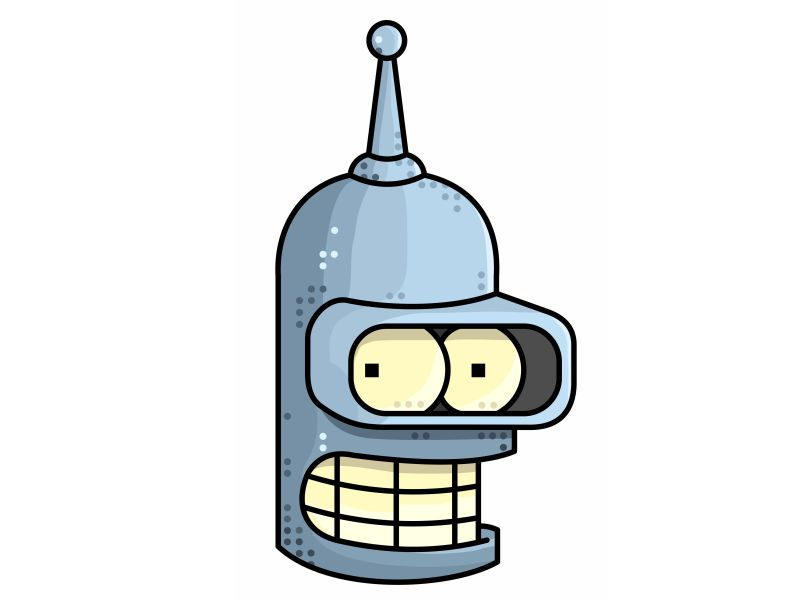

<!DOCTYPE html>
<!--
  This is a sample HTML file which shows how to use speech in the WebChat.
  1. Build the project: "npm run build"
  2. Start a web server: "npm run start"
  3. Aim your browser at "http://localhost:8000/samples?[parameters as listed below]"

  For ease of testing, several parameters can be set in the query string:
    * s = Direct Line secret, or
    * t = Direct Line token (obtained by calling Direct Line's Generate Token)
    * domain = optionally, the URL of an alternate Direct Line endpoint
    * webSocket = set to 'true' to use WebSocket to receive messages (currently defaults to false)
    * userid, username = id (and optionally name) of bot user
    * botid, botname = id (and optionally name) of bot

  You have a few options for speech recognition available to you. See definition of speechOptions below.
-->
<html>
  <head>
    <meta charset="UTF-8" />
    <meta name="viewport" content="width=device-width, initial-scale=1.0, maximum-scale=1.0, user-scalable=no" />
    <title> Cybot </title>
    <link rel="shortcut icon" href="img/favicon.ico" type="image/x-icon">

<!--     <link href="https://unpkg.com/botframework-webchat/botchat.css" rel="stylesheet" />
 -->    <link rel="stylesheet" href="botchat1.css">
    

    <style>
      .example {
        float: left;
        margin-right: 20px;
        width: 300px;
        background-color: lightblue;
        
      }

      .example > h2 {
        font-family: 'Segoe UI';
        background-color: lightblue;
      }

      #BotChatGoesHere {
        border: 1px solid #333;
        /* border: 1px solid rgb(109, 238, 92); */
        float: left;
        margin-left:-10px;
        margin-top: -10px;
        margin-bottom: 10px;
        height: 100%;
        position: fixed;
        width: 100%;
        /* Image code Starts here-----*/
        background-image: url("img/bender_bg.jpg"); 
        background-position: center;
        background-repeat:no-repeat;
        background-size:contain;
        background-position-x:center;
        /* background-size:cover; */
      }
      /* body {
        background-color: lightblue;
      } */
    </style>
  </head>
  <body>
    

    <div id="BotChatGoesHere"></div>

    <!-- // <script src="https://unpkg.com/botframework-webchat/botchat.js"></script> -->
    <script src="botchat_js.js"></script>

    <!-- If you do not want to use Cognitive Services library, comment out the following line -->
    <!-- // <script src="https://unpkg.com/botframework-webchat/CognitiveServices.js"></script> -->
    <script src="CognitiveServices_js.js"></script>

    <script>
      const params = BotChat.queryParams(location.search);

      const user = {
        id:  'aditi',
        name:  'Cybot'
      };

      const bot = {
        id:  'chat',
        name: 'Chat'
      };

      window.botchatDebug = params['debug'] && params['debug'] === 'true';

      // // Option 1: No speech
      //
      // const speechOptions = null;

      // // Option 2: Native browser speech (not supported by all browsers, no speech recognition priming support)
      //
      // Note that Chrome automatically blocks speech if the HTML file is loaded from disk. You can run a server locally
      // or launch Chrome (close all the existing Chrome browsers) with the following option:
      // chrome.exe --allow-file-access-from-files <sampleHtmlFile>
      //
      // const speechOptions = {
      //   speechRecognizer: new BotChat.Speech.BrowserSpeechRecognizer(),
      //   speechSynthesizer: new BotChat.Speech.BrowserSpeechSynthesizer()
      // };

      // // Option 3: Cognitive Services speech recognition using API key (cross browser, speech priming support)
      //
      const speechOptions = {
        speechRecognizer: new CognitiveServices.SpeechRecognizer({ subscriptionKey: 'a6e0349fc6544c29baf56fc1a88cf952' }),
        speechSynthesizer: new CognitiveServices.SpeechSynthesizer({
          gender: CognitiveServices.SynthesisGender.Female,
          subscriptionKey: 'a6e0349fc6544c29baf56fc1a88cf952',
          voiceName: 'Microsoft Server Speech Text to Speech Voice (en-IN, PriyaRUS)'
        })
      };

      // // Option 4: Cognitive Services speech recognition using a token (usually generated in a secure backend using your API key)
      //
      // function getToken() {
      //   // Normally this token fetch is done from your secured backend to avoid exposing the API key and this call
      //   // would be to your backend, or to retrieve a token that was served as part of the original page.

      //   return fetch(
      //     'https://api.cognitive.microsoft.com/sts/v1.0/issueToken',
      //     {
      //       headers: {
      //         'Ocp-Apim-Subscription-Key': 'YOUR_COGNITIVE_SPEECH_API_KEY'
      //       },
      //       method: 'POST'
      //     }
      //   ).then(res => res.text());
      // }

      // const speechOptions = {
      //   speechRecognizer: new CognitiveServices.SpeechRecognizer({
      //     fetchCallback: (authFetchEventId) => getToken(),
      //     fetchOnExpiryCallback: (authFetchEventId) => getToken()
      //   }),
      //   speechSynthesizer: new BotChat.Speech.BrowserSpeechSynthesizer()
      // };

      // // Option 5: Your own custom implementations of ISpeechRecognizer and ISpeechSynthesizer
      //
      // const speechOptions = {
      //   speechRecognizer: new YourOwnSpeechRecognizer(),
      //   speechSynthesizer: new YourOwnSpeechSynthesizer()
      // };

      BotChat.App({
        bot: bot,
        locale: params['locale'],
        resize: 'detect',
        // sendTyping: true,    // defaults to false. set to true to send 'typing' activities to bot (and other users) when user is typing
        speechOptions: speechOptions,
        user: user,

                directLine: { secret: 'R5eM9CQsIrE.cwA.3Kc.XcJNiBINo9YgSw0RriXpXZtJ3FoxHfcs0cXSsxRVQ7w' }

      }, document.getElementById('BotChatGoesHere'));
    </script>
    <!--  -->
  </body>
</html>
